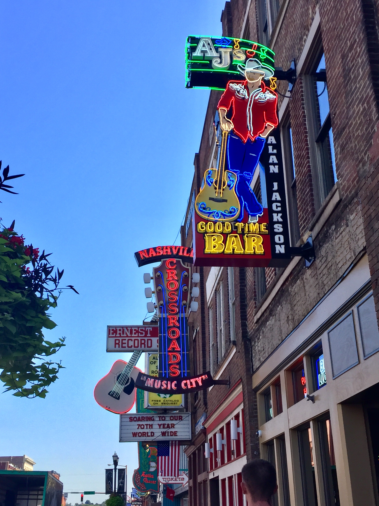
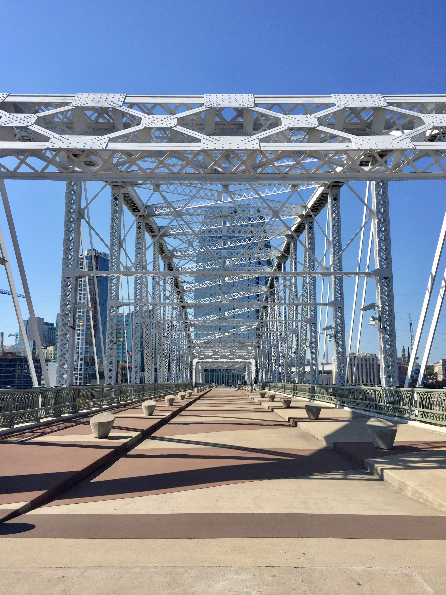

Honky Tonks
World famous honky tonks line Broadway downtown.

Batman Building
Owned by AT&T, this building is famously known as the 'Batman' building.

Pedestrian Bridge
The pedestrian bridge connects downtown to East Nashville.

Nissan Stadium
Formerly known as LP Field, the stadium is home to the Tennessee Titans.